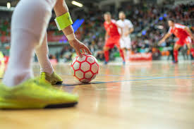

Origem e História do Futsal
O Futsal, uma variante popular do futebol para ambientes internos, tem uma história rica e única. Originado no Uruguai na década de 1930, foi criado por Juan Carlos Ceriani, que o projetou como uma mistura de futebol, basquete, polo aquático e handebol, adequado para jogar em ambientes fechados, como as YMCA. O esporte rapidamente ganhou popularidade devido à sua adaptabilidade a espaços limitados, promovendo habilidades técnicas e controle de bola próximo.
O Futsal se espalhou pela América do Sul, especialmente no Brasil, onde se tornou uma parte crucial da cultura do futebol, influenciando significativamente o futebol de rua brasileiro. Na década de 1960, o esporte se espalhou internacionalmente. A primeira competição internacional ocorreu em 1965, a Copa Sul-Americana no Brasil.
O corpo governante do esporte, inicialmente formado sob a FIFA, estabeleceu o primeiro conjunto de regras unificadas. O primeiro Campeonato Mundial organizado pela FIFUSA (o corpo internacional para o futsal) foi realizado em 1982 no Brasil. Em 1989, a FIFA assumiu o Campeonato Mundial, promovendo e padronizando ainda mais o futsal globalmente.
Características e regras do Futsal:
As equipes são formadas por 5 jogadores de linha (sendo um goleiro) e 7 jogadores, no máximo, como reservas.
O Futsal é praticado em quadra retangular de piso rígido, com medidas que variam de acordo com a categoria. Na Liga de Futsal Masculina, por exemplo, a quadra deve ter entre 38 e 42 metros de comprimento por 18 a 25 de largura.
A bola de futsal (categoria adulto masculino) deve ter entre 62 e 64 cm de circunferência e peso entre 400 e 440 gramas pelas regras FIFA. Pelas regras da AMF (Associação Mundial de Futsal), a bola deve ter entre 60 e 62 cm de circunferência e peso entre 430 e 450 gramas.
O árbitro pode usar dois cartões para punir as faltas. O amarelo (advertência) e o vermelho (expulsão por 2 minutos ou pode ser substituído ao tomar um gol) nas regras FIFA. Já nas regras da AMF, ele pode usar três cartões: amarelo, vermelho e azul.
As substituições podem ocorrer a qualquer momento e em número indeterminado, nas regras estabelecidas pela FIFA. Já pelas regras da AMF, as substituições só podem ocorrer com a partida parada.
Os jogos da categoria adulto ocorrem em 40 minutos (2 tempos de 20 minutos).
O posicionamento de uma equipe de futsal segue o seguinte esquema: goleiro (defende o gol com mãos e pés e também pode atacar), fixo (jogador de defesa), ala (joga mais pelas laterais), pivô (movimenta-se no ataque e arma jogadas).
Os laterais e escanteios são cobrados pelos pés.
10 melhores jogadores de futsal da história
- Falcão
- Ricardinho
- Manoel Tobias
- Schumacher
- Lenísio
- Luis Amado
- Kike
- Jackson
- Paulo Roberto
- Konstantin Eremenko